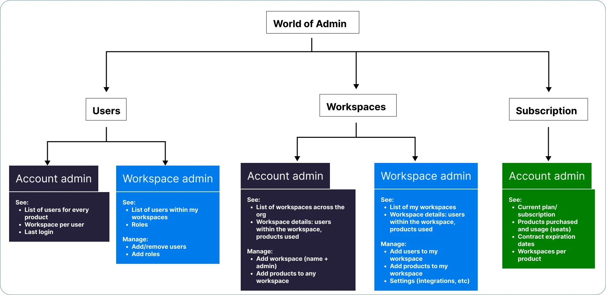
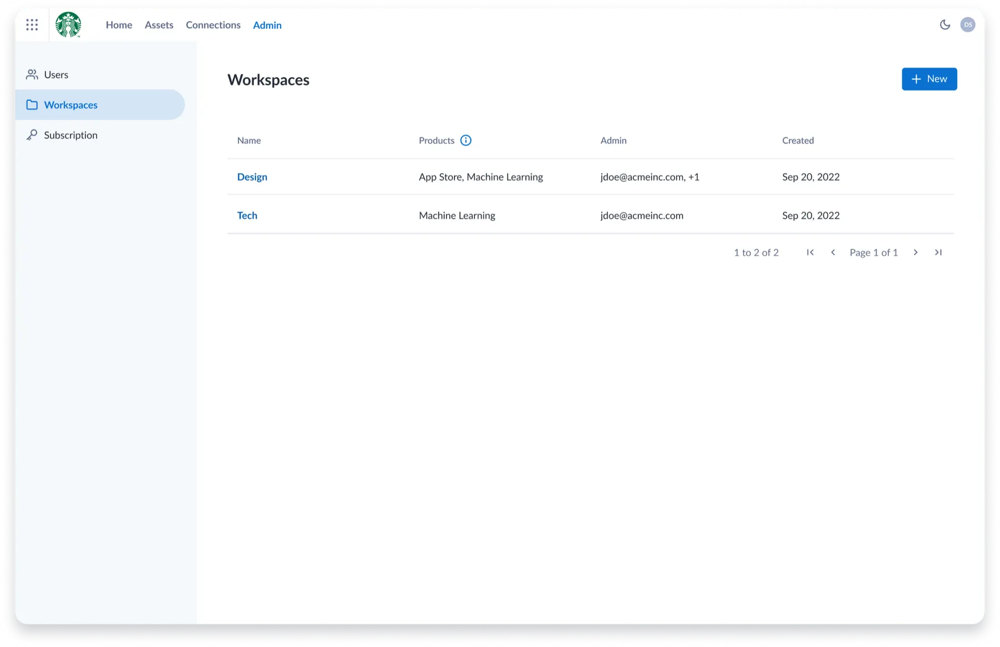
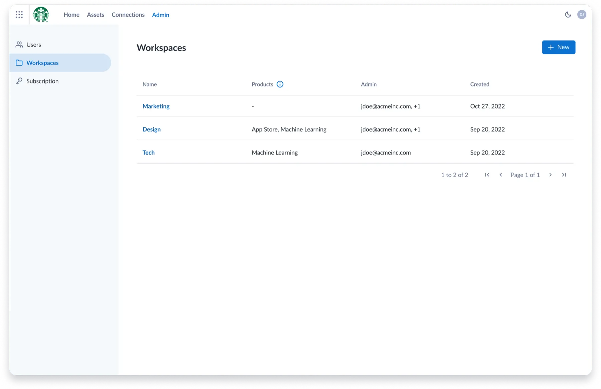
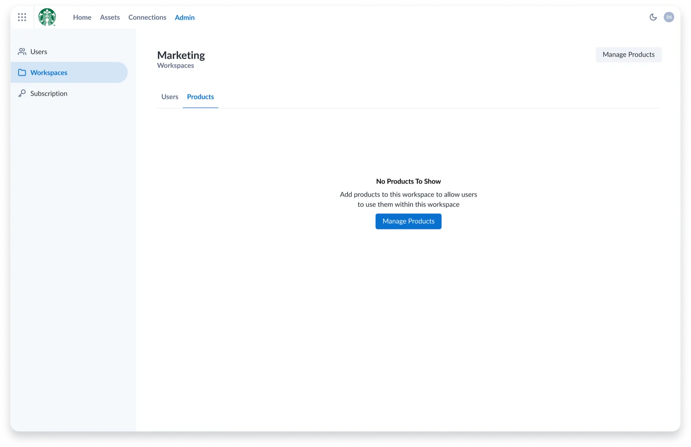
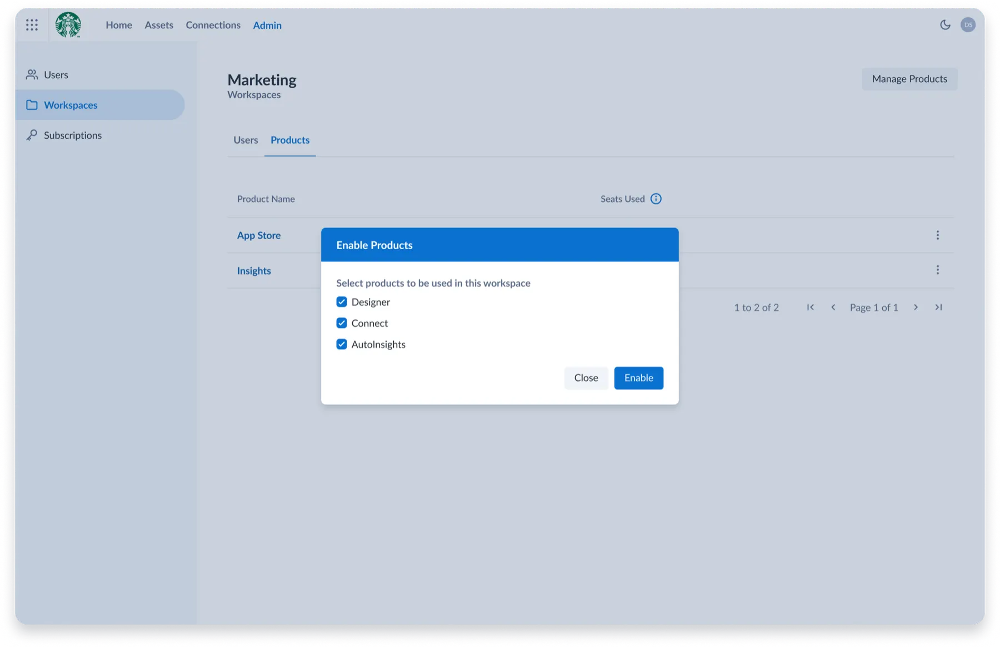
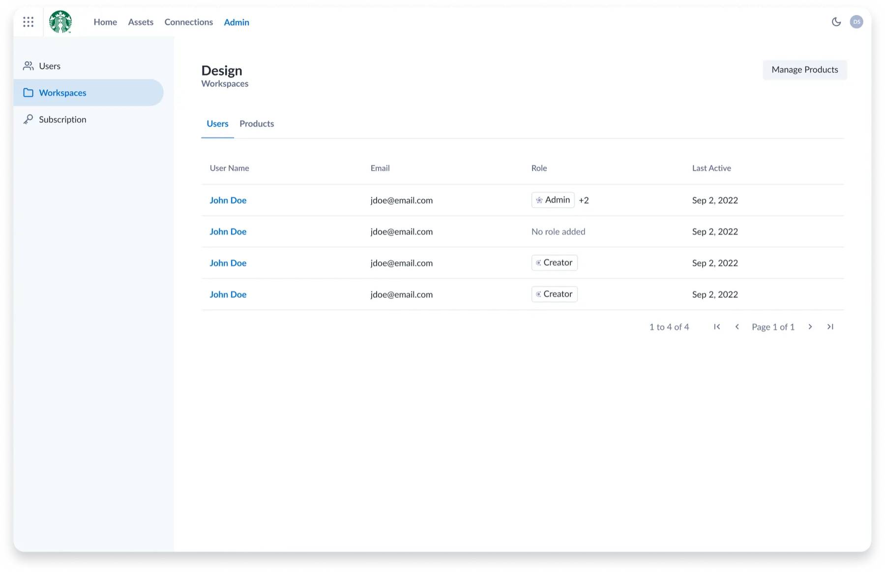
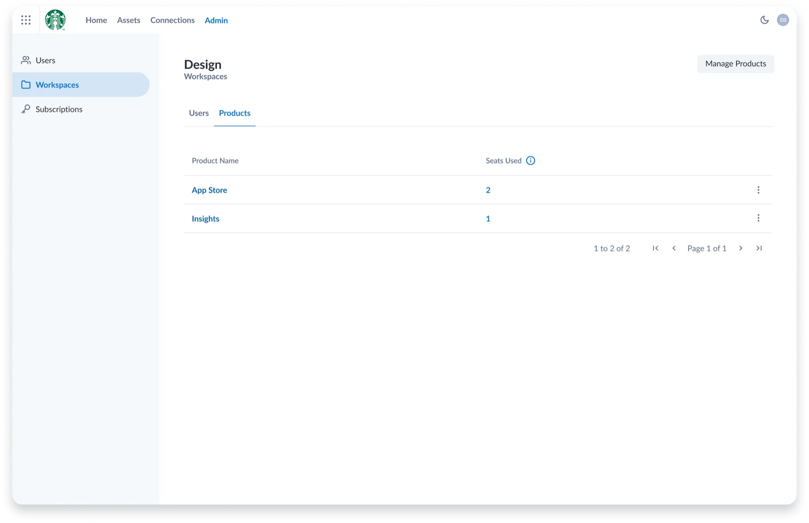
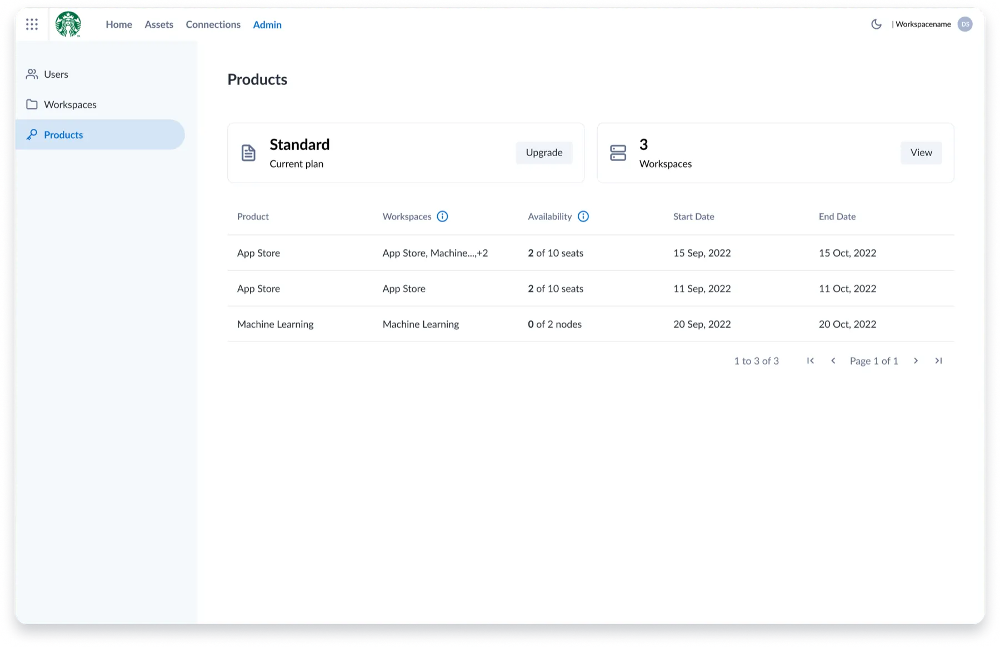

Background
Alteryx provides a suite of products, including its newer offering, Alteryx Analytics Cloud. The company was known for its on-prem products but knew it needed to transition to the cloud. The acquisition of Trifacta set it on a path to do just that.
Managing licenses across the Analytics Cloud suite was handled manually through backend processes that offered little transparency.
The problem
We ran a series of user interviews across all of our user types, and one participant said it best:
“Working as an admin, tracking down licenses can be a difficult and manual process. I want all of my licensing in one place in order to reduce complexity and improve efficiency.”
— Research participant
Research
The admin project was initiated to support efficient user management at the workspace level. Working with product management, I helped define personas and user stories, and identified two main user types: Workspace Admin and Account Admin.
We also defined the jobs to be done, including the ability to invite, disable, and remove users effectively.

Solution
Implementation involved close collaboration with architects and the development team. The goal was to bring user management closer to the users and make it feel seamless.






